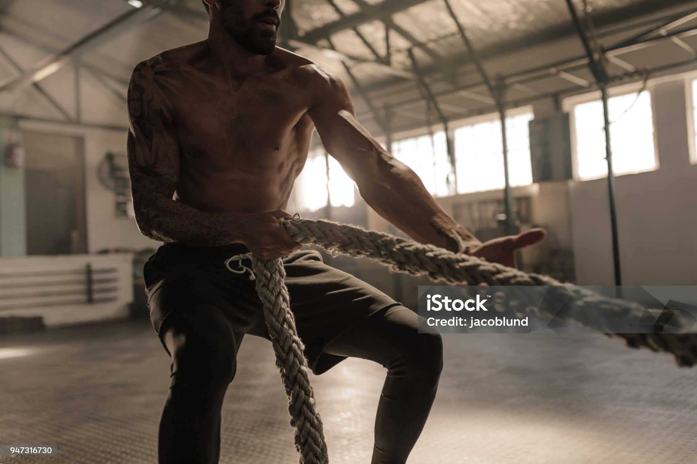

A warrior isn’t someone who goes looking for fights.
But he's ready to neutralize a threat should one be unavoidable.
And here’s the truth most men choke on:
If you want to protect your family, earn their respect, and walk through the world with a spine instead of a question mark, you have to stop being a big ol’ lazy pussy about life.
Not everything needs to feel good. Life is not about seeking hedonistic pleasure. Not everything needs to be easy. Stop feeling sorry for yourself, everyone has problems just as deep and complex as yours.
And no one is coming to save you. Not the government, not your job, not your parents, not your pastor, and sure as hell not some bullshit social media manufactured fantasy version of yourself that you cling
to while scrolling TikTok and telling yourself “one day.”
Your woman doesn’t need a “one day” man.
Your kids don’t need a “tried my best” man.
They need a dangerous, disciplined, grown-ass man they can trust when the world stops pretending to be stable.
Men today are drowning in comfort and calling it “self-care.”
Bro, that’s not self-care — that’s sedation. Self neutering.
You want to know why you feel anxious, weak, depressed, unfocused, miserable, irritated, and lost?
Because you were born for pressure and objectives, not Minecraft and Papa Johns.
You were built for tests, not treats.
Your biology is screaming at you to do something hard, and you keep shoving donuts and screens into that void.
A man without challenge becomes a man without purpose.
And a man without purpose becomes a burden — not a blessing — to everyone around him.

Most guys stay on the safe side of the fence. Your family needs the man who crosses it when he has to.
The Modern Man’s Disease: Avoidance
Most men today don’t have a weakness problem — they have an avoidance problem.
They avoid conflict.
They avoid responsibility.
They avoid discipline.
They avoid pain.
They avoid accountability.
And then they wonder why their life feels like a slow-motion car crash.
You know what builds men?
Everything you keep running from.
Know what happens if you cut open a caterpillar's caccoon and remove the butterfly?
It dies... because the struggle to free itself from the caccoon is what strengthens the
wings enough to fly.
You want to stop being a big ol’ pussy?
Here’s how.
1. Stop letting your feelings run the show

Winning the inner war always comes before winning anything in the outside world.
You are not your emotions.
You are not your impulses.
You are not the momentary flash of anger, fear, boredom, or frustration.
Weak men react.
Strong men respond.
If your emotions can hijack your actions, you’re not a man — you're just a clone of your emotionally unhinged single mom.
Gain control of your inner world, or you’ll never have control of anything outside of it. Thats a fact.
Try this starting today:
- When you’re angry — breathe before you speak. As my wife says "practice your pause".
- When you’re anxious — take action instead of spiraling. Choose to view it as excitement.
- When you’re sad — move your body instead of sulking. Get at least 20 minutes of sunshine, lift weights, go for a walk, or
clean your room. yeah, I'm being serious. Because you will get a fat hit of dopamine once you finish transforming your room into a place
that is tidy and well organized. A cluttered house = a cluttered mind
- When you’re overwhelmed — break tasks down and attack. I learned pretty late in life that I can do just about anything as long as I break it
down into small enough steps, and unless you are some low IQ Muslim or Sub-Saharan, you can too.
Discipline is doing what’s right even when your body screams for the opposite.
That’s how you build a spine.
2. Fix your body — it’s the engine of your entire life

You don’t need a perfect plan. You just need to stop living like a broken lawn chair.
If you’re always tired, always aching, always slow, always winded, always inflamed, always moody, always foggy — your body is waving a white flag while you pretend “this is just aging.”
No.
It’s neglect.
Strong men are built, not born. And a weak body creates a weak mind, weak morals, weak decisions, and weak leadership.
You don’t need to become a bodybuilder — just stop living like a broken lawn chair. You really don't want to enter your late 30s
and 40s in poor shape.
Simple rules to stop being soft:
- Walk 30–60 minutes every day.
- Lift 3-5 sets of something heavy 2–4 times a week.
- Drink water and milk instead of liquid candy.
- Eat enough protein to support muscle.
- Get 7–8 hours of sleep instead of doomscrolling. You need REM sleep to think sharp and have good reaction time, and your muscles need
time to repair in order to grow.
If you are in fact a punk ass bitch...
Your woman will notice.
Your kids will notice.
predators will notice.
Hell — you will notice.
3. Learn skills that make you hard to kill

Tools, skills, and calloused hands age a lot better than high scores and hot takes.
Men today are experts at things that don’t matter — fantasy football, gaming stats, celebrity drama, obscure anime lore — but can’t fix a toilet, change a tire, start a fire, calm their own child, or kick anyone's ass.
You don’t have to be Rambo.
But you do have to be useful.
You need to build muscle memory. So train, train, and train more.
That might mean drawing from it's holster until it becomes second nature, so that you don't get brained by some Haitain thug while you are fumbling with the thumbstrap on your holster. Or simply practice a couple of 3 piece
combos on a punching bag. That may not sound like much but 98% of people don't even do that, so you will have an edge on almost everybody in this soft-guy era.
Every man should know:
- How to defend himself and his family physically.
- How to handle most modern firearms.
- How to handle basic medical situations.
- How to read a physical paper map.
- How to use tools without hurting himself.
- How to build, repair, or rig solutions.
Competence creates confidence.
Confidence creates calm.
Calm creates leadership.
Your family needs a leader — not a liability.
4. Stop numbing yourself with bullshit
Real life happens where the screens end and the firelight begins.
Weak men are always chasing a distraction.
Strong men confront what’s in front of them and ask for more.
It’s easy to sedate yourself with:
- Endless scrolling
- Junk food
- Alcohol
- Porn
- Video games
- Complaining
- Fantasy instead of reality
But the problem with comfort is it feels good while your life collapses silently in the background.
You can’t grow while anesthetized.
Turn your brain back on. Unplug from social media and dopamine factories like "Candy Crush" and you will begin to see the circus for what it is.
Truth is that so many of us are afraid that if we turn off our devices we will be stuck with all of the things we have been avoiding, or pushing to the backs of our minds.
But in reality you will gain EVERYTHING back, and I really do mean everything. Because you have likely been putting on a performance to keep up with your online persona for so long that
you've forgotten who you really are. Remember as a kid when you used to walk up to another kid you've never met before in your life and just start playing together? That kid didn't die.
But he's buried underneath a ton of bullshit and needs room to breathe. Just try a 3 hour phone detox and if you find yourself fidgiting, annoyed, anxious, if your ears ring in the absense
of constant noise ans stimulation, then it's time to be honest with yourself and do something differently. Because what kind of leader are you going to be if you are losing your shit because
you can't check your instagram notifications?
5. Set standards your family can be proud of
Weak men want comfort.
Strong men want responsibility.
A weak man lets his mood dictate his effort.
A strong man shows up and performs regardless of how he feels.
Your family watches everything you do — they don't give a rats moose-knuckle what you say.
- If you’re disciplined, they feel safe.
- If you’re calm, they trust you.
- If you’re fit, they can rely on you.
- If you’re capable, they lean on you.
The household’s emotional climate is built around the man’s strength or the man’s weakness.
There is no neutral. By biological default, you are the pillar, like it or not.
When the ship sinks, men go down with the boat while women and children jump on life rafts,
because real masculine men understand duty and sacrifice to the highest level, even if it means stepping directly in the path of danger in order to protect the weakest and most valued members of our society.
I've got news for you sunshine, you're not special. You have value, but above all else you are a protector. And that may mean standing between them and imminent danger some-day.
6. Become the kind of man pressure respects
Pressure doesn’t care how you feel. It only respects preparation.
Life doesn’t care how you feel.
Danger doesn’t care.
Crisis doesn’t care.
Your enemies don’t care.
Pressure only respects preparation and adaptability.
If you don’t train for stress, stress will consume you — violently.
Start here:
- Gradually do things that scare you.
- Do things that exhaust your muscles.
- Do things that force you to think while uncomfortable.
- Do things that demand discipline and routine instead of motivation.
When pressure hits — and it will — you’ll be ready instead of wrecked.
7. Build a mission bigger than your comfort
Weakness thrives in meaningless lives.
Men crack when they have nothing to fight for. Got no wife and kids? Start up a small business.
Something to give you a reason to get out of bed in the morning. I started with dropshipping,
back when a handful of people were making major coinage doing it. I personally never made a lot of money,
but I did learn a lot about eccommerce and I inadvertently learned lots new skills I would never never imagined
if I hadn't gone done this productive path. Find out what you are really good at and find a way to monetize it.
If you already work a 9-5 then make your side-hustle be your 5-9, and watch it grow and evolve. You yourself
will evolve into something a little more solid as well.
Your mission is not to “be happy.”
It’s to build, protect, lead, prepare, and leave a legacy.
Happiness is a byproduct of living like a man, not a goal you chase like a lost dog. It's never meant to be a permanent
state of being.
Your mission includes:
- Raising strong, stable kids that other people don't hate.
- Protecting your woman physically, spiritually and emotionally.
- Building a home that can withstand storms.
- Mastering your body so you stay functional until old age.
- Providing more security this year than last year.
Bottom Line: Stop being a big ol’ pussy and start being the man your family deserves
The world is not getting softer.
The storms are not slowing down.
Your comfort will not save you — it will drown you.
The time to learn to swim is not while the boat is sinking.
But here’s the good news:
Strength isn’t genetic.
Strength is a choice repeated daily.
Start today.
Not tomorrow.
Not “after things settle down.”
Today. Right fucking now, make yourself a promise and follow through. Something you can actually accomplish.
Become the man who leans into difficult things.
Become the man no one wants to bet against.
Become the man your family can look at and quietly think:
“We’re safe because he’s here.”
Weakness is a luxury your family cannot afford.
Strength is a duty you can no longer ignore.
.jpg)
14-in-1 Survival & Emergency Kit
Everything you need for the worst day of your life — knife, compass, fire starter, wire saw, multitool, and more.
Buy on eBay →
- Building a home or sanctuary that can ride out storms—financial and literal.
.jfif)
Stainless Steel Camp Cook Kit
Boils water fast, cooks real meals, and fits perfectly in any bug-out bag.
Buy on eBay →
The world is shifting fast. The storms are coming. Weak men drown. Prepared men pull their families to higher ground.